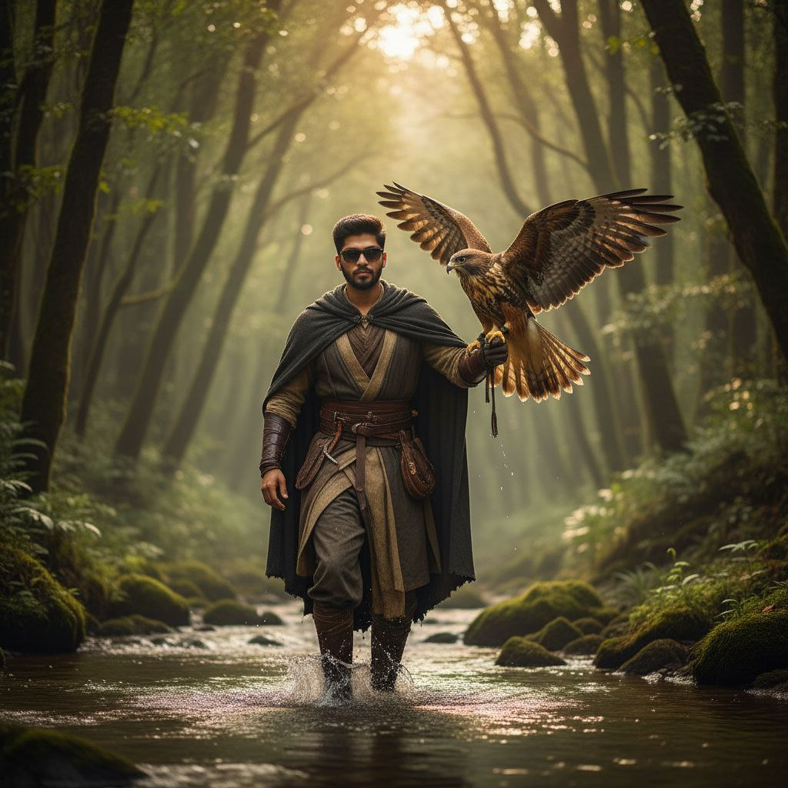

Ghibli-Style AI Prompts
Magical Studio Ghibli Inspired Images
These Ghibli-style AI prompts are perfect for generating magical landscapes, whimsical characters, and dreamy animated scenes inspired by Studio Ghibli films.

1. Ghibli ultra-realistic portrait of me wearing a pastel white chiffon dress
A 4K cinematic, ultra-realistic portrait of me wearing a pastel white chiffon dress with pastel pink laces and belts, flowy and elegant. I'm holding a pastel white frosted birthday cake with two layers- pastel white and pastel pink - decorated with pastel pink roses like a floral painting, and a sparkling candle flame on top. Scene is dark with a soft warm mid-light glowing from a beautiful table lamp. A neon shiny pastel pink balloon with "Happy Birthday" in white glowing letters floats beside me. I wear a tiny silver birthday crown, my hair is flowy, and I'm gazing at the cake gracefully, posing for a birthday photoshoot. Keep my face exactly accurate and unchanged. Soft pastel tones, dreamy atmosphere, cinematic lighting. Captured with a 50mm f/1.4 lens, shallow depth of field, soft bokeh background, high dynamic range, professional studio lighting, dramatic shadows, and gentle light reflections. Perfect focus on face and cake, film-grade composition

2.winter portrait
Create an ultra-realistic 8K winter portrait, maintaining the young man's exact appearance and facial features. He stands outdoors in a snowy winter park, leaning slightly towards a snowman with a joyful, positive smile radiating warm, friendly energy, his hands in his pockets. He is wearing a festive Christmas sweater, black fabric trousers, and black earmuffs. He is posing affectionately with a completely realistic yet recognizable "Olaf" snowman made of large snow segments, real ice, and heavy frost details. The snowman has a realistic carrot nose, branch-shaped stick arms, large expressive eyes adapted for realism, and a light-colored smile. The atmosphere is a magical, fairytale winter scene with soft cinematic lighting, combining cold blue tones with warm light tones. The background features a lit Christmas tree and frost-covered trees, rendered soft with strong bokeh. There is soft, cold light on the subjects, light reflections on the snow surface, and fine snowflakes flying in the air due to a light wind. The shot is framed from a soft low angle (around 85mm, f/1.4 lens), focusing sharply on the young man and Olaf with high-qualfy definition, capturing the texture of a real photograph

3. A captivating digital painting portrait
Create an Ultra realistic A captivating digital painting portrait of a young woman with a wistful expression, her gaze directed towards the left side of the frame. She possesses fair skin and long, flowing black blonde hair that cascades ver her shoulders and back. A delicate, light pink colored hooded garment, possibly linen or cotton, drapes ver her head and shoulders, with soft folds and shadows suggesting its texture Around her neck, a simple necklace with a single, long gold chain is visible. The background is a minimalist, warm, light beige or pale yellow, creating a soft, ethereal atmosphere. The art style has a painterly quality with visible brushstrokes and a slightly unfinished or dissolved look towards the bottom of the garment, adding to its artistic charm. The lighting is soft and diffused, highlighting her facial features and the sheen of her hair. Keep the original face, don't change my face, 100% same." at bottom Right corner stylish signature Vetri" is visible.

4.realistic close top angle portrait of only girl in red
Convert the above image into ultra realistic close top angle portrait of only girl in red long gown high neck dress in stylish hair style and elegant makeup there should be many number of glowing red color butterflies in background and there should be many red color glowing butterflies flying in dir in front in out of focus..background should be deeply blurred elegant tone.ensure top angle close up shot.she should slightly look up the camera.artistic.

5.
Create a"Heavily textured vil paint on canvas, with A bright and airy atmosphere. Portrait of A woman (image uploaded), with abstract colorful brushstrokes, vibrant expressionist painting style, intense emotions, and colorful painting for the background."face should be 100% same as uploaded image.

6. Ultra graphic design with the name
Create an Ultra graphic design with the name "Ammu" in a mix of brown and black cursive font. A woman with long dark hair and a pink bucket hat is merged with letter "A", pointing towards it with a big smile. The background is split into light Pink (left) and white (right). Face should be same as UPLOADED image. Background Butterfly and stars add.

7. Ghibli Magical Pink
Ultra-realistic cinematic portrait of a woman with warm smile, in flowing light pink sari with floral embroidery and matching flats, spinning gracefully so dupatta flares. Behind her, softly glowing close-up of her own realistic face. Smooth pink gradient background, soft dreamy light. Full-body front, large headshot behind.

8. Ghibli
Crie um retrato realista de uma cena noturna em frente a um ponto de ônibus iluminado por um poste aceso. A pessoa da imagem está ao lado do personagem Totoro em tamanho grande, ela segura um guarda- chuva transparente e veste uma jaqueta acolchoada branca, calça jeans larga e tênis branco. Ambos estão em pé sobre a calçada, voltados para frente. O ambiente é natural, com árvores verdes ao fundo e folhas secas espalhadas pelo chão. A atmosfera é fria, suave e mágica, com iluminação difusa e um ar nostálgico, típico de um dia nublado de inverno em um vilarejo tranquilo.

9. Ghibli selfie with avatar
{ "prompt": "Ultra-realistic cinematic photograph inspired by the attached reference image. BRAND-NEW VERSION with a DISTINCT POSE and DIFFERENT BACKGROUND POSITION: a standing aisle-edge selfie inside a large, dimly lit IMAX-style movie theater. The camera is held at chest height and angled slightly upward, creating a heroic cinematic perspective while revealing glowing aisle lights and staggered seat rows behind. A young, lean, stylish man stands casually near the aisle railing, torso slightly twisted toward the camera, one arm extended holding the phone while the other hand rests lightly on the railing. He wears a clean black hoodie (hood down, no logos), realistic fabric texture and folds, paired with dark jeans and black sunglasses, calm confident expression. Positioned just behind and slightly offset on both sides are two tall blue-skinned alien humanoids inspired by an epic sci-fi universe, one male and one female. They feature elongated ears, soft striped skin patterns, natural tribal jewelry, handcrafted straps, and organic, nature-inspired accessories. The female alien avatar wears a modest, fully covered organic-style outfit with layered fabric and light armor; the chest area is completely covered at all times with no exposure or sexualized details. Their outfits and accessories are original designs, not copied from any movie costume. Organic bows and straps hang naturally without action poses. All three subjects lean subtly toward the camera, sharing relaxed, friendly smiles, creating a cinematic pre-movie vibe. In the background, the giant cinema screen is visible diagonally in the upper-left, softly glowing and blurred, displaying the on-screen movie title “Avatar: Fire and Ash” as a subtle atmospheric element without emphasizing branding or trademarks. Lighting is low and cinematic, mixing aisle LEDs and soft screen glow to illuminate faces naturally, with realistic shadows, shallow depth of field, ultra-realistic skin texture, detailed fabric, photorealistic DSLR quality, cinematic color grading, authentic IMAX theater ambiance. Add a stylish text signature “AmanZaid” at the bottom-left corner, small size, elegant handwritten signature style. No logos, no watermarks.", "negative_prompt": "Low quality, blurry, cartoon, anime, illustration, CGI look, artificial render, over-saturated colors, harsh lighting, flat lighting, distorted faces, deformed anatomy, extra fingers, extra limbs, bad hands, nudity, exposed nipples, exposed chest, revealing outfits, sexualized body details, copied movie costumes, exact film logos, trademarks, large or distracting text, incorrect text placement, watermarks, plastic skin, unrealistic proportions, noise, grain, motion blur, low resolution, wrong aspect ratio" }.

10. Ghibli Ocean Sunset
Hyper-realistic, true-to-life photo of a man walking through a shallow river in a dense forest, captured with a real professional camera (85mm lens, f/1.8, natural daylight). Zero illustration or CGI-pure photographic realism with natural skin texture, real shadows, and authentic colors. Identical facial features to the reference, with a perfectly matching short natural beard. Focused expression. Hooded cloak, layered robes, belts, and fabric wraps identical in design, realistically wet at the bottom and moving naturally. Mid-step in the river with real water ripples, splashes, reflections, and droplets. A large hawk sits on his left arm with wings extended, showing realistic feathers and natural lighting. Surrounded by tall trees, green foliage, moss, rocks, soft haze, and sunbeams filtering through the canopy. Warm cinematic light, natural reflections on the water, true depth of field, HDR realism, and no painting effects.